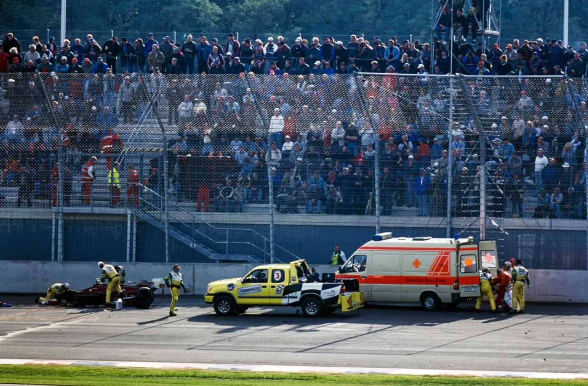
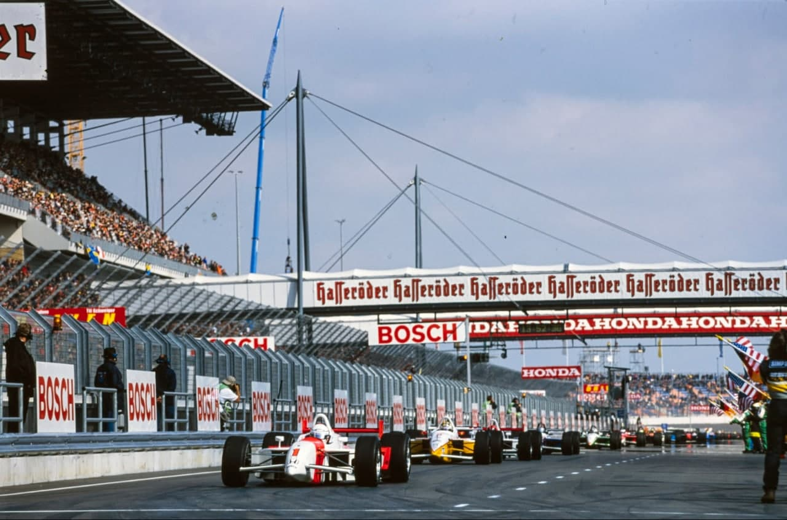
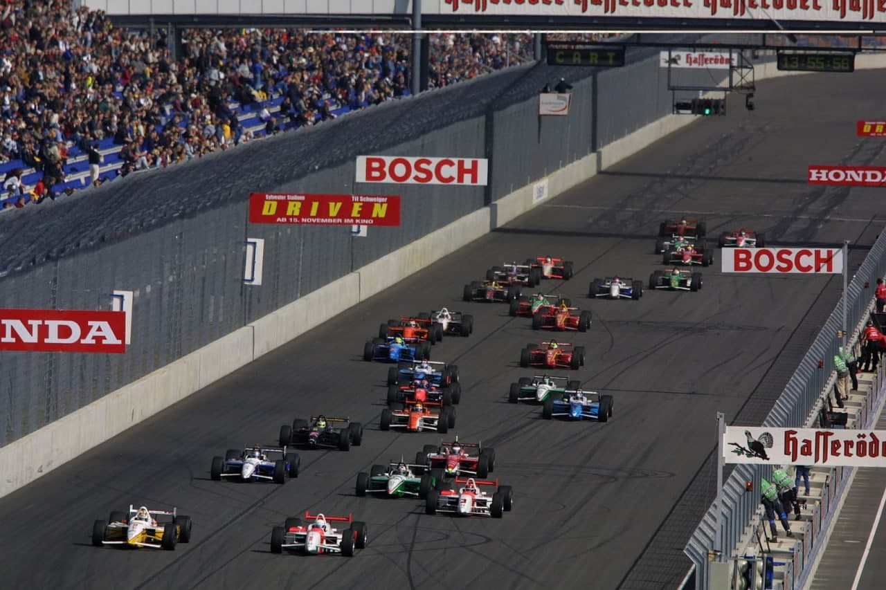
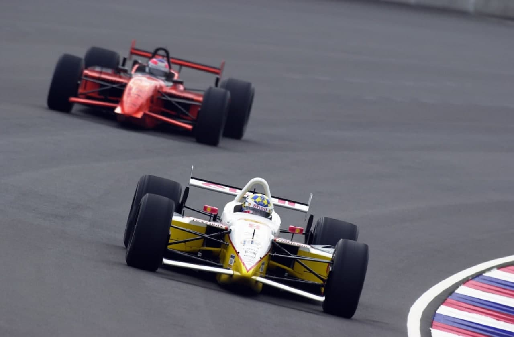
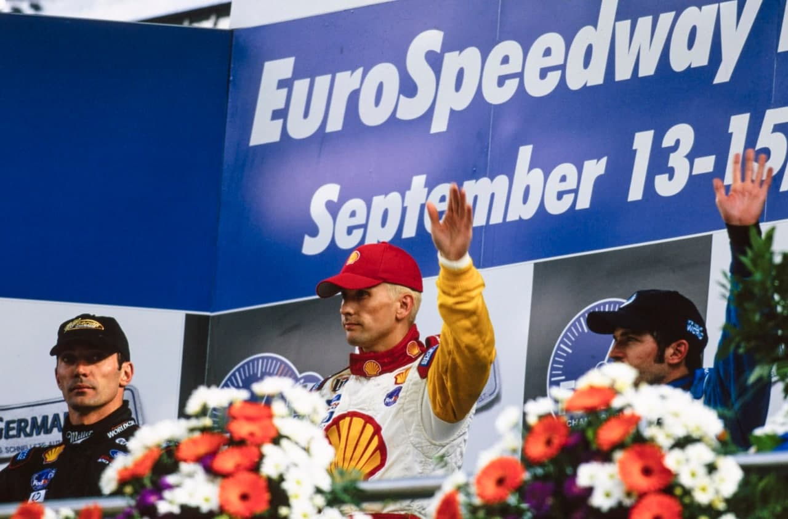

ESTADO DE CHOQUE

Zanardi perde as pernas em acidente e comove o mundo da Cart, abalado pelos ataques terroristas no dia 11 de setembro.
Numa reportagem de 1997, o jornal USA Today escreveu: "Alessandio Zanardi e a melhor coisa que já surgiu para empurrar um carro da Indy desde a invenção do motor traseiro". O italiano estava no auge e conquistava cada vez mais fãs americanos, encantados com a sua gana, a sua obstinação e, acima de tudo, com a sua simplicidade. Por isso, foi um choque para todo o mundo o aterrador acidente na 142ª volta do GP da Alemanha, no oval de Lausitzring. Zanardi derrapou ao retornar dos boxes e foi atingido em cheio, a 330 km/h. pelo carro de Alex Tagliani. O cockpit partiu-se em dois, ele perdeu 70% do sangue e teve as pernas amputadas. A tragédia ofuscou o que poderia ter sido uma entrada triunfal da Cart na Europa. O GP da Alemanha levou 88 mil pessoas as arquibancadas e teve emoção de sobra na pista. Dez pilotos lideraram a corrida, houve um show de ultiapassagens e apenas três bandeiras amarelas, que tanto incomodam os que não estão acostumados com os “breaks" dos esportes americanos. No fim, a equipe Rahal fez dobradinha, com Kenny Brack e Max Papis. Mas o resultado pouco interessou, diante do drama de um bicampeão. Zanardi ficou três dias lutando contra a morte no Hosptlal Berlim-Marzahn. Passou por três cirurgias e recebeu várias transfusões ate os médicos anunciarem que ele estava fora de perigo. O italiano ainda sofreu mais cirurgias de limpeza dos fragmentos osseos e ficou em coma induzido até, finalmente, falar com a muher, Daniela. A família temia a sua reação ao saber que havia perdido as pernas, mas ele foi forte como sempre. “O que importa é que estou vivo e tenho você e Niccolo”, disse à esposa, lembrando do filho de três anos, seu novo orgulho, que já o tinha feito decidir se aposentar no fim do ano. Zanardi ficou internado 46 dias e superou o trauma com uma vontade incomum de querer voltar a andar com próteses. O seu estado de espírito surpreendeu até os amigos. Tony Kanaan, Jimmy Vasser, Max Papis e o patrão Morris Nunn, que ficaram com Daniela nas três primeiras noites no hospital e voltaram a Berlim para visitá-lo, após a corrida de Rockingham, mal puderam acreditar na sua recuperação. Antes de entrar no quarto. Nunn recebeu uma advertência dos médicos. “Eles disseram que, se fôssemos chorar, era melhor ficarmos do lado de fora e não vê-lo, porque todos precisavamos ser fortes junto com ele”, contou. “Não sabia se conseguiría, mas Alex ficou feliz de nos ver e começou a fazer piadas. Ele tem uma personalidade tremenda", completou o dono da equipe, que já havia passado por trauma semelhante, quando Clay Regazzoni ficou paraplégico num acidente em Long Beach, em 1980, com a Ensign.

Vasser e Tony se emocionaram com o reencontro. “Alex é unia pessoa maravilhosa e nós todos estávamos preocupados em perde-lo”, contou o americano. “Estou tão teliz que ele está vivo, e ele também está da mesma forma.” Tony disse que ficou pensando vários dias sobre por que uma pessoa tão boa teria de passar por algo tão ruim na vida. E achou uma resposta. “Ele é a única pessoa forte o suficiente para mostrar a nós todos como viver passando por uma coisa dessas.” Zanardi era um dos heróis de Tony na pista. Pilotava com o coração, como Gilles Villeneuve, seu ídolo na adolescência. O italiano se inspirava na bravura do canadense na pista e na sua doçura no trato com os fãs. Por isso, conseguia ser adorado até por seus parceiros de equipe, exceção feita a Ralf Schumacher, no péssimo ambiente que viveu na Williams no seu retorno à F1 em 1999. Zanardi foi campeão no kart e na Cart, vice na F-3 italiana e na F-3000 intercontinental e encerrou a carreira aos 34 anos, depois de uma temporada em que estava apenas tentando se divertir um pouco mais, antes de largar as pistas. Ele fazia sua melhor corrida do ano e chegou a liderar.

A tragédia deixou o canadense Alex Tagliani transtornado. “Não consigo ficar cinco minutos sem pensar nele. Provavelmente. Alex nunca sairá da minha cabeça”, desabafou. Nem a conversa com a mulher de Zanardi, que o inocentou, aliviou o piloto da Forsythe. "Vou tirar um grande peso do coração quando vê-lo andando novamente e tendo uma vida normal.” O acidente deixou uma marca macabra no circuito, onde o italiano Michele Albereto já havia morrido num treino para as 24 Horas de Le Mans, no início do ano.
A vitória de Brack, a quarta da temporada, ficou em segundo plano. O sueco voltou a liderança do campeonato com os 20 pontos pelo triunfo e 1 por ter liderado o maior número de voltas na corrida. Em 16 das 21 provas disputadas, Brack tem 131 pontos, 11 à frente de Gil (120), o pole no sábado, que somou cinco pontos pelo oitavo lugar. Michael Andretti passou do quarto para o terceiro lugar com 115 pontos após terminar em quarto. Brack terminou, sob bandeira amarela, 0,154 segundos à frente do companheiro de equipe do Team Rahal Max Papis. O italiano registrou seu segundo pódio da temporada, incluindo uma vitória em Portland. Foi a primeira dobradinha na história de 10 anos do Equipe Rahal. Brack liderou as primeiras 63 voltas e herdou a liderança quando Zanardi fez seu pit stop final na volta 142, após liderar 19 voltas. Graças à sua vitória, a quarta em um oval nesta temporada, o sueco agora soma 100 pontos em pistas ovais.

O terceiro lugar foi para Patrick Carpentier da Forsythe, o quarto pódio nas últimas seis etapas, incluindo sua primeira vitória em Michigan. Os 14 pontos conquistados no sábado colocam o canadense em sétimo lugar no campeonato, com 83 pontos. Completando os cinco primeiros estavam Andretti, cujo desempenho no quarto lugar representou seu sétimo top five da temporada e o quarto em nas últimas sete corridas, incluindo uma vitória em Toronto; e Oriol Servia da Sigma, cujo segundo quinto lugar consecutivo correspondeu ao melhor resultado da temporada estabelecido em Vancouver. Tony Kanaan terminou em setimo, um resultado ruim para quem liderou e deu a impressão de ter o melhor carro. Bruno Junqueira foi 11º e Hélio Castroneves, 12º. Maurício Gugelmin chegou em 16° e Max Wilson, em 18. Christian Fittipaldi, Roberto Moreno e Cristiano da Matta abandonaram.
A multidão de sábado de 87.689 elevou para 148.853 espectadores nos três dias do The American Memorial, o primeiro evento da CART realizado na Europa.
